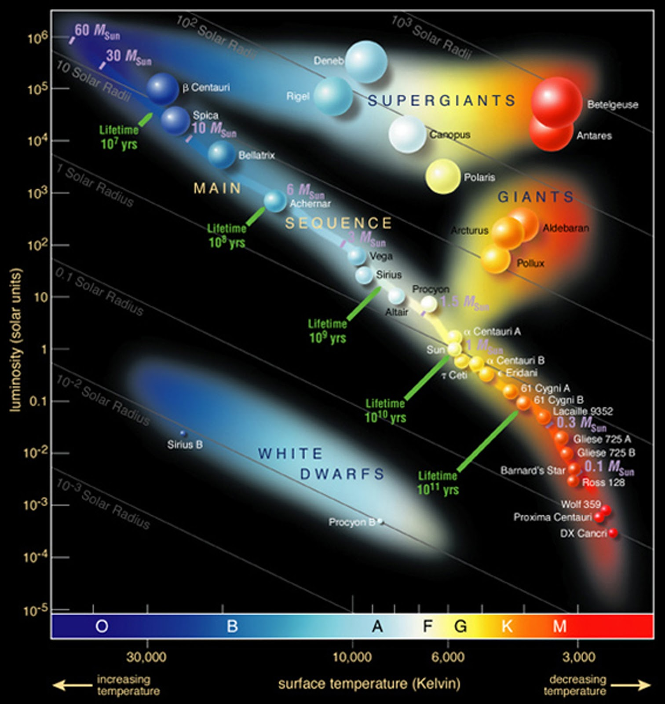
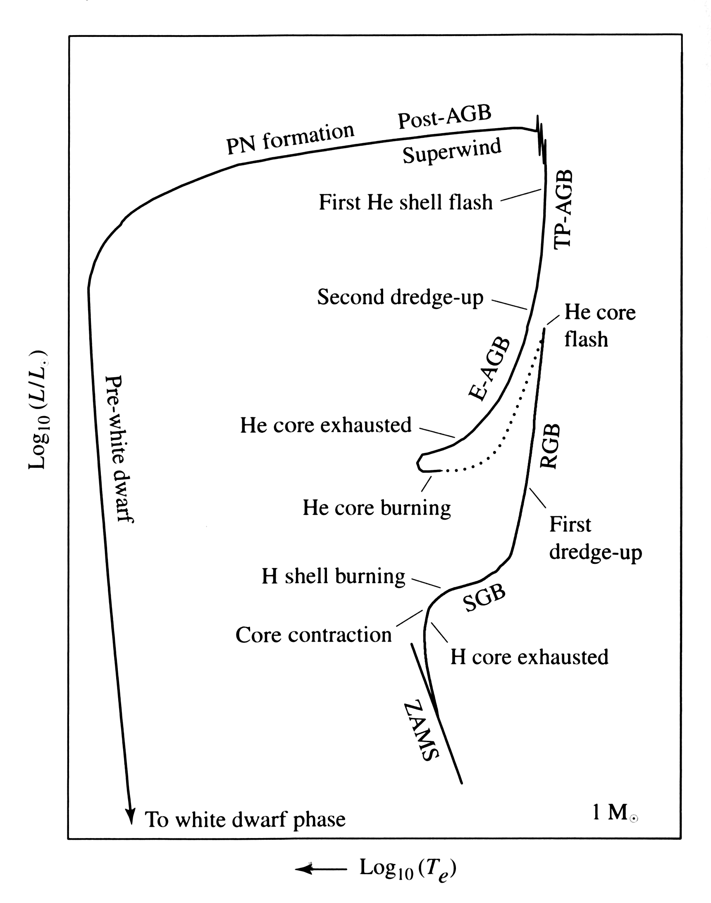

1.8. The Evolution of Stars#
Professor: Max Pettini (IoA)
Learning objectives:
Physical Properties of Stars
Stars as Blackbodies
The Hertzsprung-Russell Diagram and its Nomenclature
Stellar Models and the Equation of State
Stellar Evolution: Case Study of a 1M\(_\odot\) Star
Timescales in Stellar Evolution
Abstract
Stars radiate as blackbodies (to a first approximation). Their range of colour, from infrared to ultraviolet, reflects their different temperatures, from \(T \simeq 3000\) to \(\sim 30\,000\)K. When plotted on a luminosity-temperature plane, most stars occupy a narrow strip, the Main Sequence. Stars are born on a location within the Main Sequence that depends on their mass, and remain roughly at the same location while burning hydrogen into helium in their cores. For a solar-mass star this stage lasts \(\sim 10\)Gyr. Subsequent stages last a much shorter time, and take our solar mass star through the red giant branch, the horizontal branch, the asymptotic giant branch, a brief planetary nebula stage to finally end up as a cooling white dwarf. The evolution of more massive stars is different in its details. Stars that start off with masses \(M > 8\)M\(_\odot\) end their lives in an explosive event, a core-collapse supernova, that leaves behind either a neutron star or a black hole.
Physical Properties of Stars: Temperature, Luminosity and Mass
Fig. 1.37 Hubble Space Telescope image of the star cluster NGC~265 in the Small Magellanic Cloud.#
Fig. 1.38 ESO Very Large Telescope image of the cluster Trumpler~14 in the Carina nebula. This ground-based image has been sharpened with Adaptive Optics techniques#
Fig. 1.37 and Fig. 1.38 show two examples of star clusters. Star clusters allow us to appreciate directly some of the physical properties of stars for the simple reasons that, to a first approximation, all the stars of a cluster: (i) are at the same distance from the Sun, and (ii) have the same age. NGC~265 (Fig. 1.37) is approximately 300 million years old and is located in the Small Magellanic Cloud, one of our two companion galaxies at a distance of \(\sim 60\)kpc. Trumpler~14 (Fig. 1.38) is one of the youngest stellar clusters known, with an age of only 1 million years. It is associated with the Carina nebula at a distance of 3.2kpc.
It is immediately obvious from these images that: (a) stars have a range of colours, and (b) some stars are intrinsically brighter than others. More generally, we can make a list of what we may consider to be the most important physical properties of a star:
Mass
Temperature
Luminosity
Gravity
Age
Chemical Composition
These parameters are all inter-related but, to a first approximation, it is the first one, the mass of a star, that determines its temperature, luminosity, surface gravity and lifetime. The chemical composition is only a second order effect.
The Hertzsprung–Russell Diagram
Fig. 1.39 The light output from the Sun at visible wavelengths can be approximated by a blackbody spectrum with \(T = 5777\)K#
Fig. 1.40 Blackbody curves for different temperatures.#
The light we received from stars closely approximates that of a blackbody [1].
which is known as Wien’s displacement law. For a star like the Sun, with \(T_{\rm eff} = 5770\)K, \(\lambda_{\rm max} = 5020\) Å. The total luminosity of a star is a function of its radius \(R\) and its temperature \(T\):
where \(\sigma\) is the Stefan-Boltzmann constant (\(\sigma = 5.67\times 10^{-5}\)erg~s\(^{-1}\)~cm\(^{-2}\)~K\(^{-4}\)).
A useful consequence of Equation (1.1) is that it is possible to deduce the effective temperature, \(T_{\rm eff}\) of a star by simply measuring its brightness at two wavelengths and matching their ratio to that of blackbody curves of different temperatures. The difference in magnitude through two filters, for example a filter passing mostly blue light and one passing green-yellow light, defines a colour of the star, in this case the \((B - V)\) colour.
Fig. 1.41 H-R diagram for nearby stars with measured parallaxes from the Hipparcos mission.#


Fig. 1.42 Locations of some bright stars on the H-R diagram.#
For stars at known distances (or for stars all at the same distance within a cluster), we can construct a diagram plotting their luminosity as a function of colour, as in Fig. 1.42. This is undoubtedly the most import diagram in stellar astronomy. It is referred to as the Hertzsprung–Russell diagram (HRD) from the names of the astronomers who first constructed it in the 1910s, or more generally as a colour-magnitude diagram.
We can immediately make the following observations:
Most of the stars are found in relatively narrow strip on the \(M_V - (B-V)\) plane. This strip is the Main Sequence.
Stars of the same \((B-V)\) colour, or equivalently of the same \(T_{\rm eff}\), can have widely different luminosities. For example, stars with \((B-V) \simeq 1.0\) in Fig. 1.42 have values of \(M_V\) which span 10 magnitudes, or a factor of 10000! From eq.Equation (1.2) we understand this to be a consequence of their different sizes; evidently, the radii of such stars span a range of two orders of magnitude. For this reason, stars above the main sequence are termed giants and supergiants, while stars below the main sequence are sub-dwarfs.
It is also evident that only a few stars are located away from the Main Sequence. The most straightforward interpretation of this observation is that stars must spend most of their life on the Main Sequence. Thus, the H-R diagram charts stellar evolution: stars move onto the Main Sequence when they are born and evolve off the Main Sequence during the late stages of their evolution.
The HR Diagram as a Window on Stellar Evolution
Following on this last point in more detail, there is a rich nomenclature describing different loci on the HR diagram, as shown in Fig. 1.43.
Fig. 1.43 Different stages in stellar evolution are reflected in different groupings of stars in the HR diagram.#
The main groupings are as follows:
Main Sequence – the most populated region on the HRD. Our Sun lies on the Main Sequence.
Red Giants – a well populated area of large red stars.
White Dwarfs – Faint, small and very compact stars.
AGB Stars – asymptotic giant branch stars, a more luminous sequence slightly offset from the red giants.
Subgiants – a sparsely populated group between the main sequence and giant branch.
Supergiants – bright large stars spanning blue to red found in young star clusters.
Red Clump – an increased population at the base of the AGB
Horizontal Branch – a similarly luminous set of stars extending bluewards from the red clump With the aid of stellar models, we now recognise these labels as different stages in the evolution of stars of different masses.
Stellar Models
Stars are complex physical systems, but not too complex to be modelled numerically and, with some simplifying assumptions, analytically. The aim of stellar models is to construct a representation of a star which is physically accurate to a sufficient degree to reproduce the observed properties of stars, and thereby obtain a physical understanding of what determines those properties.
The foundations of models for stars that are in hydrostatic and thermal equilibrium are a number of coupled differential equations, the most relevant of which are:
The equation of Mass Continuity:
Hertzsprung-Russel_StarData where \(\rho\) is the density — see Fig. 1.44.
Fig. 1.44 The equation of mass continuity.#
Fig. 1.45 In hydrostatic equilibrium \(|{F_g} + F_{P,t}| = |F_{P,b}|\).#
The equation of Hydrostatic Equilibrium:
as shown in Fig. 1.45.
The equation of Thermal Equilibrium:
where \(\cal{E}\) is the rate of energy release per unit mass (erg~s\(^{-1}\)~g\(^{-1}\)), and
The equations of Energy Transport:
for radiative transport, or
for energy transport by adiabatic convection. In the last two equations, \(\kappa\) is the opacity, \(a\), \(c\), \(k\) and \(G\) are physical constants, \(\gamma\) is the ratio of specific heats, and \(\mu m_{\rm H}\) is the mean particle mass.
So, we have five coupled differential equations describing the run of mass \(M\), pressure \(P\), luminosity \(L\) and temperature \(T\) within a star with \(r\), the distance from the centre of the star, as the independent variable. The equations are coupled to each other through the fact that, for a general equation of state, \(P\) is a function of both \(\rho\) and \(T\).
Equation of State There are several sources of pressure in a star:
We look at each in turn.
Gas pressure The first term is the familiar gas pressure which, for an ideal gas, is given by:
where \(k\) is Boltzmann’s constant, \(m_{\rm H}\) is the mass of the
hydrogen atom and \(\mu\) is the mean molecular weight.
Taken together, \(\mu m_{\rm H}\) is the mean particle mass.
The value of \(\mu\) depends on the composition of the gas;
it is changes in \(\mu\) that drive stellar evolution.
Radiation pressure Even though photons are massless particles, they do have a momentum \(p = E/c = h\nu/c\) associated with their frequency \(\nu = c/\lambda\). This momentum can be transferred to particles during absorption and scattering, that is photons can exert radiation pressure. $\(P_{\rm r} = \frac{1}{3} a T^4 \)\( where \)a$ is the radiation constant. In many astrophysical situations, the second term on the right-hand side of eq.Equation (1.4) can be greater than the first term. In some cases, the force exerted by photons can even exceed the gravitational force. Radiation pressure is, for example, believed to be the force that triggers mass-loss through stellar winds in the most luminous stars.
Electron degeneracy pressure
This is a quantum mechanical effect that manifests itself
at very high densities of the interiors of stars (and also in gas at very low temperatures).
Under these conditions, the electrons fill all the lowest momentum states so that
the momentum (or energy)
distribution differs markedly from the classical Maxwell-Boltzmann distribution
of an ideal gas, which describes the situation when the particles
occupy only a very small portion of the lowest states. The electrons
are forced into higher momentum states
than they would normally occupy, resulting in an abnormally high pressure.
Such a gas is referred to as degenerate.
In a completely degenerate gas, the pressure is independent
of temperature and is a function of density only:
Stellar Evolution
With modern computing facilities, the equations of stellar structure can be solved iteratively with multidimensional matrices. The models show that a star of a given mass and composition has a unique, fully determined structure. However, the nuclear reactions that power a star by fusing four hydrogen nuclei into a helium nucleus deep in the stellar core change the initial chemical composition of the star over time. Furthermore, convection may set in at some radius, and mix processed and unprocessed gas. The stellar structure equations depend on the chemical composition of the gas, primarily through the parameter \(\mu\). It is therefore inevitable that stars evolve with time.
Stellar evolution, as opposed to equilibrium, can be reproduced in our computers by solving a series of equilibrium stellar models—normally referred to as a stellar evolutionary track—in which one updates in steps the gradual enrichment by elements heavier than hydrogen at different radii within the star.
The net effect of stellar evolution is to move a star away from the main sequence onto other regions in the H-R diagram. Observations immediately tell us that stars spend most of their lives on the main sequence, and that the subsequent evolution is relatively short-lived. This is evident as soon as one plots on the H-R diagram all of the stars within a given volume (see Fig. 1.42): the number of stars away from the main sequence is much smaller than the number of stars on the main sequence.
The combination of computer modelling and observations has led to a well defined picture of stellar evolution. You will not be surprised to learn that mass is the dominant parameter determining not only the length of time a star spends on the main sequence, but also the path that it follows once it evolves off the main sequence.
Stellar Evolution: Solar Mass Stars


Fig. 1.46 Schematic diagrams of the evolution of a \(1 M_\odot\) star of solar metallicity, from the main sequence to a white dwarf. The various acronyms and the lettering indicating different evolutionary stages are explained in the text.#
Fig. 1.47 As above, from the main sequence to a planetary nebula.#
As a case study, Fig. 1.46 gives a schematic summary of the most important stages in the evolution of a \(1 M_\odot\) star of solar metallicity.
The Sun began its life \(\sim 4.6\)Gyr ago at point A on the so-called Zero-age Main Sequence (ZAMS). Over the following \(\sim 10\)Gyr it will have moved from A to B — it is about half-way there now. Point B marks the exhaustion of the H fuel in the core of the Sun and the start of stellar evolution proper. From B to C (the sub-giant branch, SGB) nuclear burning takes place in a shell around an inert He core. At point C the He core has become degenerate, and it is a combination of gas and degeneracy pressure that keeps the star in hydrostatic equilibrium.
As the core contracts to increase the pressure, the outer layers of the star expand and the star moves almost vertically upwards to the red giant branch (RGB), from C to F. The red-gaint Sun will extend to half-way between Earth and Mars. It is during this stage that a deep convective envelope brings processed material from the core of the star up to the surface where it is accessible to observation, in a process called the first dredge-up.
At the tip pf the RGB (point F), the degenerate He core has reached a high enough temperature (\(T > 10^8\)K) for the triple-alpha process to begin, fusing He into C and O. In solar mass stars the onset of this phase takes place in a very brief runaway process, the He flash, after which the star settles on the horizontal branch (HB). The horizontal branch is the core He-burning equivalent of the core H-burning main sequence.
Once an inert He core has developed, nuclear burning proceeds in two concentric shells, an inner He-burning shell and an outer H-burning shell, as the star moves upwards again on the asymptotic giant branch (AGB), from point H to J. This is a very unstable configuration that results in thermal pulses.
At the tip of the AGB (point J) the outer layers of the star are lost in a fast superwind; the interaction of this wind with the slower, earlier AGB wind leads to the formation of a Planetary Nebula. Once the nebula dissipates, all that is left is the old, inert CO core which, with no further nuclear fusion taking place, slowly cools over the rest of time, giving rise to a White Dwarf.
Timescales
Approximate Timescales in the Evolution of a \(1\,M_\odot\) Star#
Phase |
\(t\) (yr) |
|---|---|
Main Sequence |
\(1 \times 10^{10}\) |
Subgiant |
\(2 \times 10^{9}\) |
Red Giant Branch |
\(5 \times 10^{8}\) |
Horizontal Branch |
\(1 \times 10^{8}\) |
Asymptotic Giant Branch |
\(5 \times 10^{6}\) |
Planetary Nebula |
\(1 \times 10^{5}\) |
White Dwarf (cooling)[^a]> |
\(> 8 \times 10^{9}\) |
Notes
[^a] Age of the Galactic disk.
Each stage described proceeds over a shorter time than the preceding one, except for the White Dwarf stage that will last for the age of the universe.
A final point of interest concerning timescales is the following. Aa a rough approximation for stars on the main sequence: \(L \propto M^{\sim 3.5}\). If stars shine through nuclear fusion, we can write:
where \(L\) is the luminosity and \(k\) is a constant of proportionality. Integrating, we have:
In other words, the steep slope of the stellar mass-luminosity relation implies a very strong dependence of the stellar lifetimes on their mass. While a \(1 M_\odot\) star will burn hydrogen for \(10^{10}\)years before evolving off the main sequence, a \(20 M_\odot\) star has sufficient fuel to last for only \(10^7\)years (see Fig. 1.48).
Fig. 1.48 Stellar lifetimes as a function of mass from the stellar evolution models of Bertelli et al. (2009). Stars more massive than \(8 M_\odot\) (with lifetimes \(t < 4 \times 10^7\)years) are thought to end their lives as Type II supernovae.#